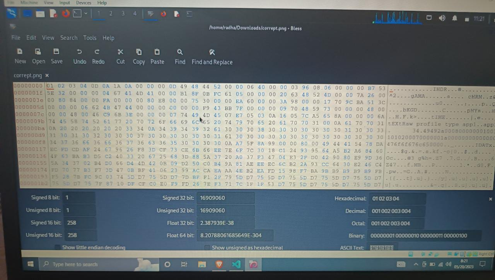
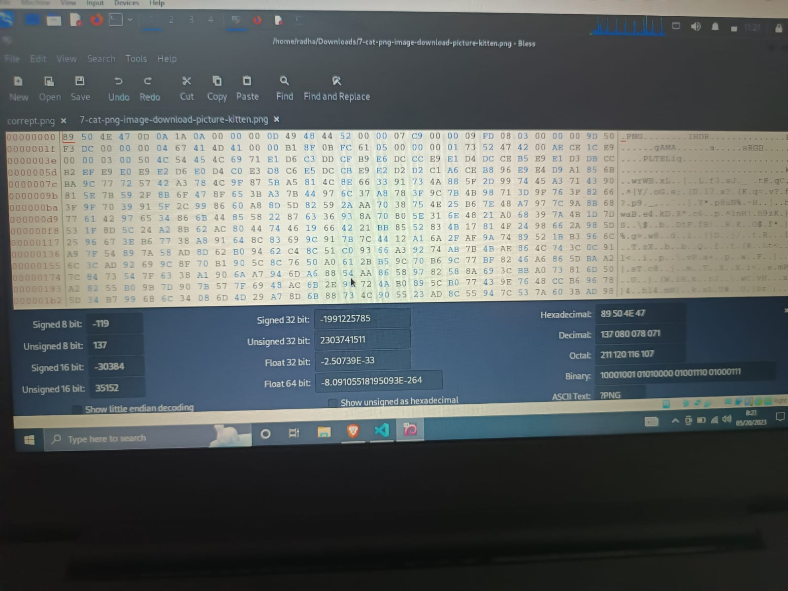
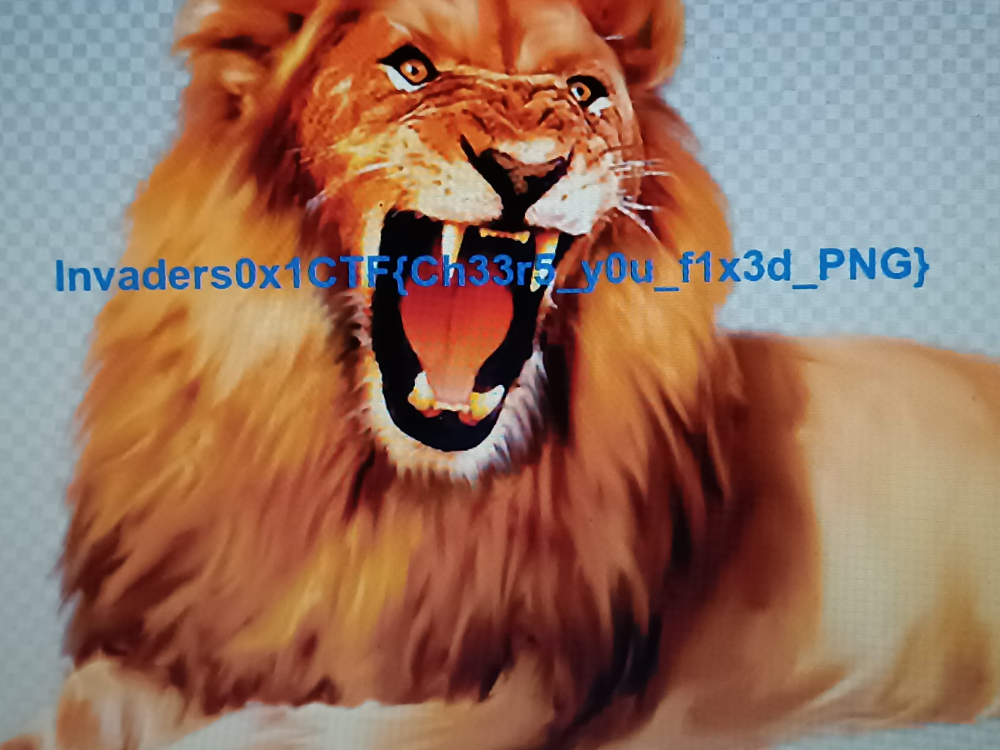
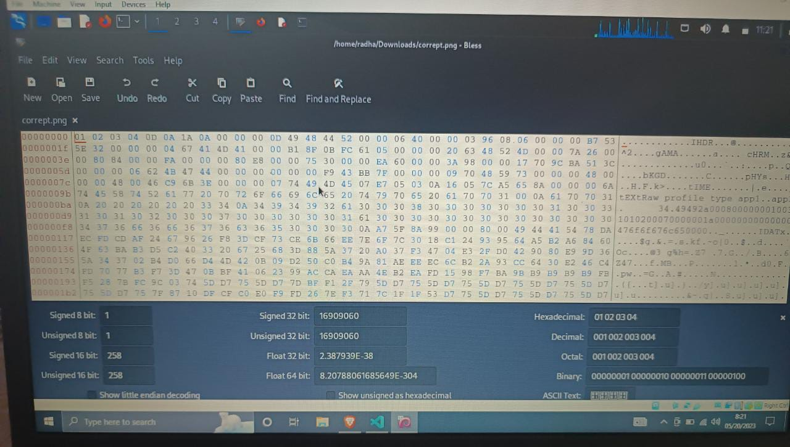
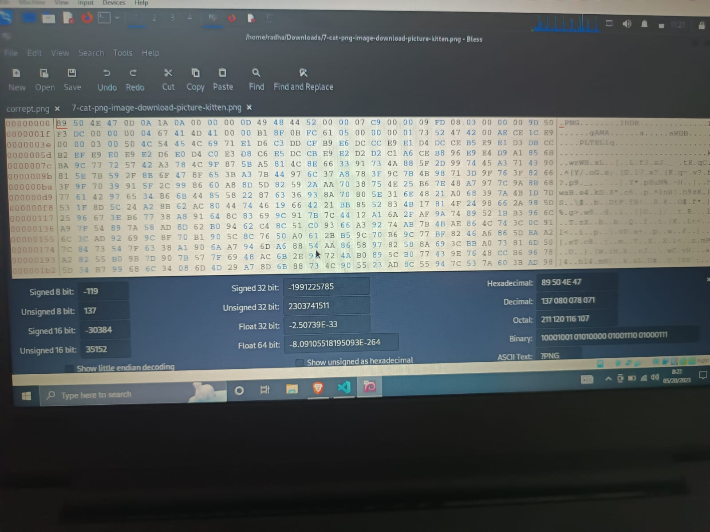
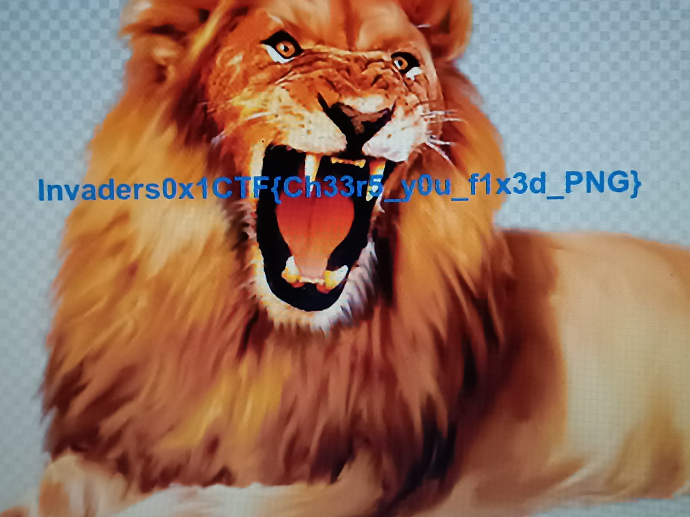

──(radha㉿kali)-[~/Downloads] └─$ file corrept.png corrept.png: data ┌──(radha㉿kali)-[~/Downloads] └─$ pngcheck -v corrept.png File: corrept.png (1245348 bytes) this is neither a PNG or JNG image nor a MNG stream ERRORS DETECTED in corrept.png ┌──(radha㉿kali)-[~/Downloads] └─$ bless Failed to open plugins directory: Could not find a part of the path '/home/radha/.config/bless/plugins'. Failed to open plugins directory: Could not find a part of the path '/home/radha/.config/bless/plugins'. Failed to open plugins directory: Could not find a part of the path '/home/radha/.config/bless/plugins'. Could not find file "/home/radha/.config/bless/export_patterns" ->now i oopened the file using bless ->used one uncorrepted pnag and another this correpted png ->changed the header numbers and ihdr Chunkies-Forensics ->saved the file reopened to find the flag in the image the images : the given image
 




